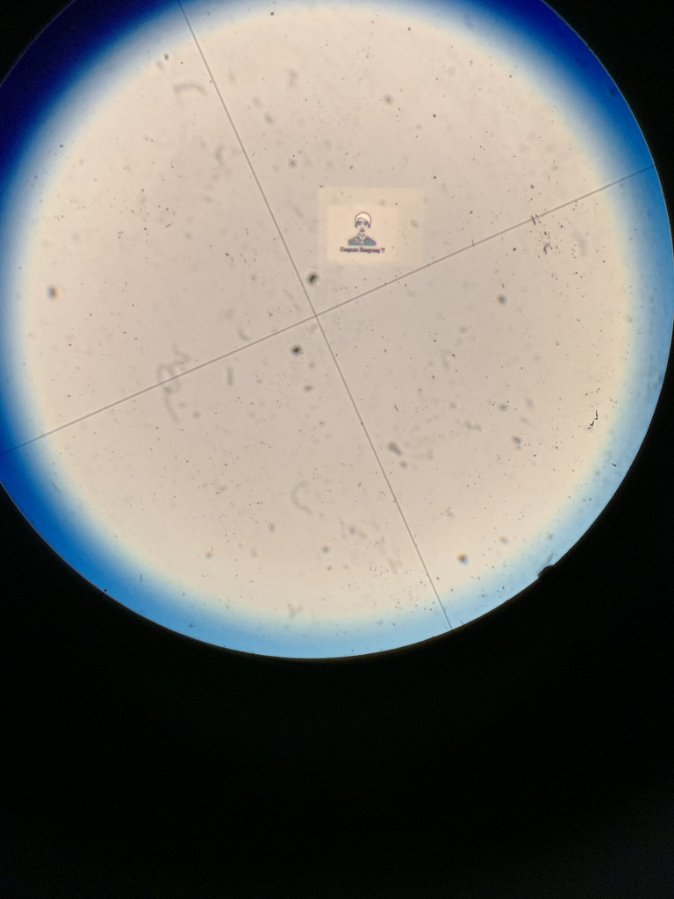

i am interested in using diamond anvil cell experiments and ab initio simulations
-- both of which are capable of producing high pressure environments found inside planets,
to understand core formation and evolution, as well as physical properties of planetary interiors.
